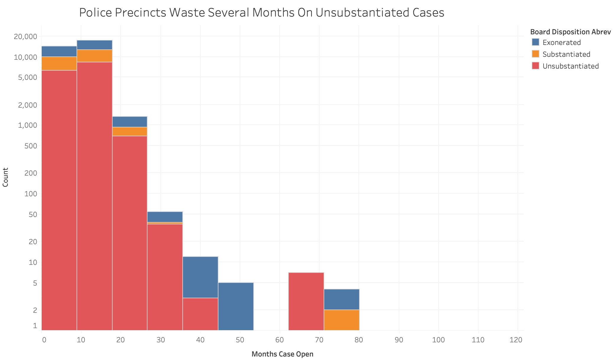
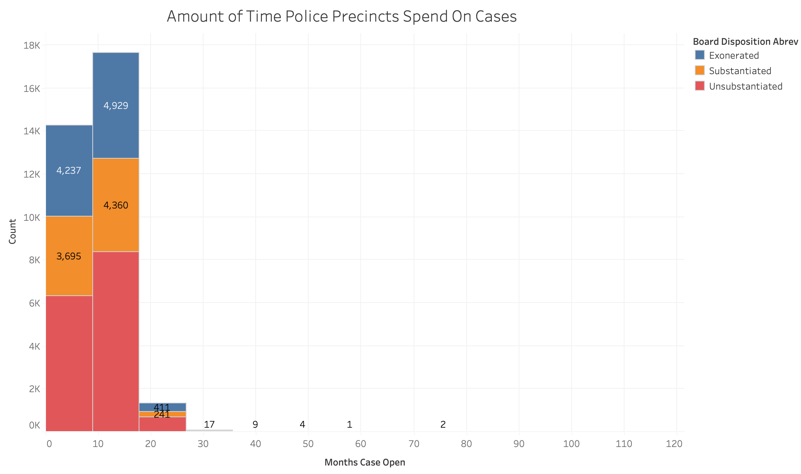

Proposition: Police Precincts Spend Too Much Time On Unsubstantiated Cases.
FOR the Proposition

Design Decisions and Rationale:
Overall Score:-1.5
- Logarithm scale to make the number of unsubstantiated seem a lot higher. Log scale also makes visible the number of cases in the higher month ranges. The number of unsubstantiated is on bottom to make those bars higher. Score: -2
- No labels because the number of unsubstantiated cases seems so much greater than other types of cases. It also makes it harder to do the math on the number of other cases. Score: -0.5
- Histogram gives the range of cases in an easily digrestible format. Score: 2
- Title seems a bit inflamatory and feeds the audience what they should think a bit. It reads a bit like an Instagram post. Score: -0.5
- Figure caption highlights long times spent on unsubstantiated cases. Score: 0.5
AGAINST the Proposition

Design Decisions and Rationale:
Score:0.5
- Bar labels on only the number of substantiated and exonerated cases to show the amount of other cases. This highlights those cases while making you disregard the substantiated cases. Score:-2
- The title makes it seem like an objective maybe even scientific format. Score: 0.5
- Scale hides values at the larger months, making them seem insignificant. The graph makes it seem like higher month counts on the x axis are unnecessary.
- Histogram gives the range of cases in an easily digrestible format. I wanted both visualizations to mirror each other. Score:2
- Figure caption highlights that cases are dealt within a year which could be thought of as fast. Score: 1
- I thought about just presenting the pie chart of time spent on unsubstantiated: looking at the number of cases closed within 12 months, between 12 to 24 months, and over 24 months. This would be fine, but you cannot see the amount of other complaints the police investigate.
Final Reflection
I kept the histogram format the same for both so it would be easier to see how the framing—not the data—changed the message. I wanted to highlight how powerful these small design decisions were. I think the hardest part was deciding what proposition that I wanted to look at, what story does the data lend itself too both ways. I did a lot of initial data analysis on the complaint information on Tableau Prep and looked out for trends. Some of the easier things was deciding how to make the 2 visualizations different. I knew I wanted them to be similar enough on a high level and only differ when you dig deeper.
After working through both visualizations, I now think of ethical analysis and visualization as presenting data in a way that allows viewers to understand the underlying patterns without hiding important context or manipulating how the data appears. Some level of persuasion is almost unavoidable in visualization because designers always have to make choices about things like scale, labeling, and titles. However, ethical visualization means making those choices in ways that still allow viewers to reasonably interpret the data for themselves. For example, using clear labels, appropriate scales, and providing enough context about what the data represents helps make sure the audience can understand what they are looking at instead of being pushed toward a single interpretation.I think acceptable persuasive choices are ones that emphasize patterns that actually exist in the data without distorting them. For instance, highlighting a category with color or drawing attention to an important trend can help viewers notice something meaningful while still keeping the visualization honest. Misleading choices happen when design decisions hide information, exaggerate differences, or make comparisons unnecessarily difficult. Examples from my own visualizations include removing labels, using a logarithmic scale to make certain values appear larger, or choosing captions that strongly guide the audience toward a specific conclusion. These techniques can shift how someone interprets the data even though the underlying numbers have not changed. Because of this assignment, I think the main boundary between acceptable persuasion and misleading design is whether the viewer could still fairly understand the data if they glance at it. If design choices make that understanding harder or push the viewer toward a conclusion that the data alone does not clearly support, then the visualization becomes misleading rather than simply persuasive.